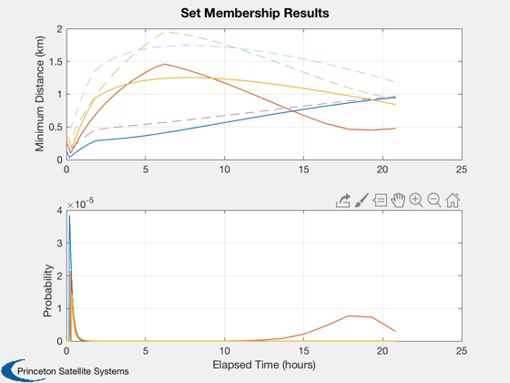
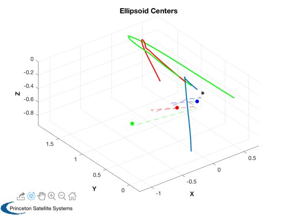
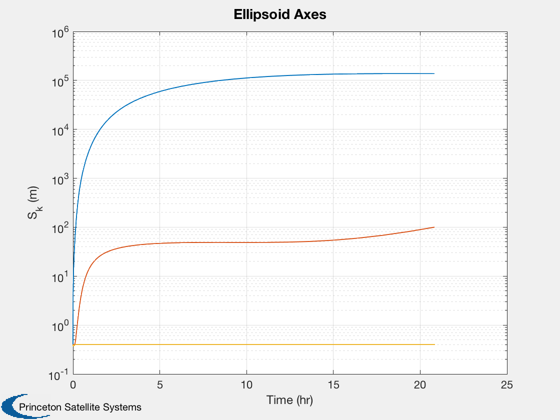

Collision monitoring demo for highly eccentric reconfiguration.
Used to produce a tetrahedron at apogee. Computes maneuvers and conducts collision survey.
Since version 7. ------------------------------------------------------------------------ See also AC, Plot2D, Plot3D, Mag, CollisionMonteCarlo, CollisionSurvey, VerifyCollStruct, EccGeometry_Structure, DiscreteGVE, FFEccTetrahedronGeometry, LPEccentricGVE, DeltaElem2Hills, FFEccGoals2Hills, FFEccHills2DeltaElem, AccelVector2ManeuverStruct, OrbRate, Nu2M, Nu2MAbs ------------------------------------------------------------------------
Contents
%------------------------------------------------------------------------------- % Copyright 2005 Princeton Satellite Systems, Inc. All rights reserved. %------------------------------------------------------------------------------- %%%%%%%% INPUT DATA HERE %%%%%%%%%%%%%%%% % apogee and perigee of MMS-type orbit Re = 6378.14; apg = 18*Re; prg = 1.2*Re; % initial true anomaly nu0 = 0; nuF = pi; % final true anomaly % Number of steps for planning nS = 1500; % size and orientation of desired tetrahedron dR = 1; % km eul = [1.457142857;0;0]; % Monte-Carlo doMC = 0; %%%%%%%%%%%%%%%%%%%%%%%%%%%%%%%%%%%%%%%%% %-------------------------------
Reconfiguration Planning
%------------------------------- trajFlag = 1; % reference orbit clear d d.eRef = (apg/prg-1)/(apg/prg+1); aRef = apg/(1+d.eRef); d.hRef = aRef - Re; d.rate = OrbRate(aRef); d.MRef = Nu2M(d.eRef,nu0); MF = Nu2MAbs(d.eRef,nuF); d.el0 = [aRef,pi/6,0,0,d.eRef,d.MRef]; elF = [d.el0(1:5),MF]; %elA = El2Alfriend(d.el0); d.dR = dR; % initial relative state for leader-follower gInit = EccGeometry_Structure; xH0 = zeros(6,3); dEl0 = zeros(3,6); for i=1:3, gInit.y0 = i; xH0(:,i) = FFEccGoals2Hills( d.eRef, nu0, gInit, d.rate ); dEl0(i,:) = FFEccHills2DeltaElem( d.el0, xH0(:,i), 2 ); end % compute geometric goals for a repeating tetrahedron at apogee gFinal = FFEccTetrahedronGeometry( pi, dR, eul ); % compute the target Hills-frame states xHF = zeros(6,3); for i=1:3 xHF(:,i) = FFEccGoals2Hills( d.eRef, nuF, gFinal(i), d.rate ); dElF(i,:) = FFEccHills2DeltaElem( elF, xHF(:,i), 2 ); end accNom = (1e-3)/100; % nominal acceleration [km/s/s] (assume 1 Newton thruster, 100 kg spacecraft) % plan maneuvers for each of the 3 relative spacecraft disp('Planning 3 maneuvers...'); xHs = cell(1,3); aC = cell(1,3); t = cell(1,3); dEls = cell(1,3); M = cell(1,3); for i=1:3 [aC{i},t{i},flag] = LPEccentricGVE( d.el0, dEl0(i,:)', dElF(i,:)', MF, nS ); mvr(i) = AccelVector2ManeuverStruct( aC{i}, t{i}, 0, accNom, 0 ); fprintf('Maneuver %d of 3 complete...\n',i); %[aCT{i}] = ManeuverStruct2AccelVector( mvr(i), t{i} ); if trajFlag [dEls{i},M{i}] = DiscreteGVE( d.el0, dEl0(i,:), aC{i}, t{i} ); %xHs{i} = DeltaElem2HillsAlfriend( d.el0, dEls{i}, M{i} ); xHs{i} = DeltaElem2Hills( d.el0, dEls{i} ); end end % one-sigma measurement noise d.initBounds = [0.1 0.1 0.1 0.0005 0.0005 0.0005]/1000; % km, km/s d.scalev = 1; d.mSC = 100; d.lenSC = 7; % m d.diaSC = 1; d.Cd = 2; d.Cr = 1.5; %-------------------------------
Planning 3 maneuvers... Maneuver 1 of 3 complete... Maneuver 2 of 3 complete... Maneuver 3 of 3 complete...
Collision Monitoring
%------------------------------- dColl = d; mvr1 = []; mvr2 = mvr; % Testing: % for k = 1:length(t) % mvr2(k).aC = aC{k}; % mvr2(k).t = t{k}; % end % 3-sigma ellipsoids dColl.scalev = 4; dColl = VerifyCollStruct( dColl ); disp('Checking trajectories for collisions...') tic [prob, dMin, xhat, Shat, tProp] = CollisionSurvey(dColl,0,xH0,mvr1,mvr2); toc disp('Finished.') %----------------------
Checking trajectories for collisions... Elapsed time is 0.162806 seconds. Finished.
Plotting
%---------------------- % Collision monitoring outputs Plot2D([tProp-tProp(1)]/3600,[cell2mat(dMin);cell2mat(prob)],'Elapsed Time (hours)',... char({'Minimum Distance (km)','Probability'}),'Set Membership Results','lin',... ['[1 2 3]';'[4 5 6]']); subplot(2,1,1); hold on; dHPlot = [Mag(xhat{1}(1:3,:));Mag(xhat{2}(1:3,:));Mag(xhat{3}(1:3,:))]; plot([tProp-tProp(1)]/3600,dHPlot,'--') % Trajectories Plot3D(xhat{1}(1:3,:),'X','Y','Z','Ellipsoid Centers'); hold on; plot3(0,0,0,'k*'); plot3(xhat{2}(1,:),xhat{2}(2,:),xhat{2}(3,:),'g','linewidth',2); plot3(xhat{3}(1,:),xhat{3}(2,:),xhat{3}(3,:),'r','linewidth',2); plot3(xHs{1}(1,:),xHs{1}(2,:),xHs{1}(3,:),'b--'); plot3(xHs{2}(1,:),xHs{2}(2,:),xHs{2}(3,:),'g--'); plot3(xHs{3}(1,:),xHs{3}(2,:),xHs{3}(3,:),'r--'); plot3(xHs{1}(1,end),xHs{1}(2,end),xHs{1}(3,end),'b.','markersize',20); plot3(xHs{2}(1,end),xHs{2}(2,end),xHs{2}(3,end),'g.','markersize',20); plot3(xHs{3}(1,end),xHs{3}(2,end),xHs{3}(3,end),'r.','markersize',20); axis equal; view(3) % Ellipsoids %AnimateFunction('initialize',struct('xhat',xhat,'Shat',Shat,'c',... % {[0.7;0;0];[0;0.7;0];[0;0;0.7]}),@AnimateEllipsoids,tProp/3600); S = zeros(3,length(tProp)); for k = 1:length(tProp) S(:,k) = sqrt(svd(Shat{1}(1:3,1:3,k)))*1000; end Plot2D(tProp/3600,S,'Time (hr)','S_{k} (m)','Ellipsoid Axes','ylog'); % Monte-Carlo for 3rd spacecraft (closest nominal pass) if doMC disp('Perform Monte-Carlo simulations.'); [probMC,dMinMC,tMin,drH] = CollisionMonteCarlo( dColl, xH0(:,3), aC{3}, t{3}, M{3} ); fprintf('True probability of collision: %3.3g%%\n',probMC*100); end %-------------------------------------- % PSS internal file version information %--------------------------------------  